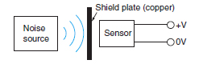

Building Automation
Industrial Automation
Power Automation & Safety


Bangladesh Distributor
Photoelectric Sensors
|
|
|
|
| Safety Precautions |
For precautions on individual products, refer to Safety Precautions in individual product information.

These Sensors cannot be used in safety devices for presses or other safety devices used to
protect human life. These Sensors are designed for use in applications for sensing workpieces and workers that do not affect safety.

Precautions for Safe Use
To ensure safety, always observe the following precautions.
Wiring
| Item | Typical examples | |
| Power Supply Voltage Do not use a voltage in excess of the operating voltage range. Applying a voltage in excess of the operating voltage range, or applying AC power (100 VAC or greater) to a DC Sensor may cause explosion or burning. | --- | |
| Load Short-circuiting Do not short-circuit the load. Doing so may cause explosion or burning. | ||
| Incorrect Wiring Do not reverse the power supply polarity or otherwise wire incorrectly. Doing so may cause explosion or burning. | ||
| Connection without a load If the power supply is connected directly without a load, the internal elements may burst or burn. Be sure to insert a load when connecting the power supply. | ||
Operating Environment
1. Do not use a Sensor in an environment where there are explosive or inflammable gases.
2. Do not use the Sensor in environments where the cables may become immersed in oil or other liquids or where liquids may penetrate the Sensor. Doing so may result in damage from burning and fire, particularly if the liquid is flammable.
Precautions for Correct Use
Design
Power Reset Time
The Sensor will be ready to detect within approximately 100 ms after the power is turned ON.
If the Sensor and the load are connected to separate power supplies, turn ON the Sensor power before turning ON the load power. Any exceptions to this rule are indicated in Safety Precautions in individual product information.
Turning OFF Power
An output pulse may be generated when the power is turned OFF.
It is recommended that the load or load line power be turned OFF before the Sensor power is turned OFF.
Power Supply Types
An unsmoothed full-wave or half-wave rectifying power supply cannot be used.
Mutual Interference
Mutual interference is a state where an output is unstable because the Sensors are affected by light from the adjacent Sensors.
The following measures can be taken to avoid mutual interference.
| Counter- measure | Concept | Through-beam Sensors | Reflective Sensors |
| 1 | Use a Sensor with the interference prevention function. | If Sensors are mounted in close proximity, use Sensors with the interference prevention function. 10 or fewer Sensors: E3C-LDA Photoelectric Sensor with Separate Digital Amplifier However, will depend on conditions. Refer to Ratings and Specifications in individual model information. 2 or fewer Sensors: E3T, E3Z, E3ZM, E3ZM-C, or E3S-C Built-in Amplifier Photoelectric Sensors (except Through-beam Sensors) E3C Photoelectric Sensor with separate amplifier | |
| 2 | Install an inference prevention filter. | A mutual interference prevention polarizing filter can be installed on only the E3Z-TA to allow close-proximity mounting of up to 2 Sensors. Mutual Interference Prevention Polarizing Filter: E39-E11 (for red light) E39-E12 (for infrared light) | --- |
| 3 | Separate Sensors to distance where interference does not occur. | Check the parallel movement distance range in the catalog, verify the set distance between adjacent Sensors, and install the Sensors accordingly at a distance at least 1.5 times the parallel movement distance range. | If the workpieces move from far to near, chattering may occur in the vicinity of the operating point. For this type of application, separate the Sensors by atleast 1.5 times the operating range. |
| 4 | Alternate Emitters and Receivers. | Close mounting of Sensors is possible by alternating the Emitters with the Receivers in a zigzag fashion (up to two Sensors). However, if the workpieces are close to the Photoelectric Sensors, light from the adjacent Emitter may be received and cause the Sensor to change to the incident light state. | --- |
| 5 | Offset the optical axes. | If there is a possibility that light from another Sensor may enter the Receiver, change the position of the Emitter and Receiver, place a light barrier between the Sensors, or take other measures to prevent the light from entering the Receiver. (Light may enter even if the Sensors are separated by more than the sensing distance.) | If Sensors are mounted in opposite each other, slant the Sensors as shown in the following diagram. (This is because the Sensors may affect each other and cause output chattering even if separated by more than the Sensor sensing distance.) |
| 6 | Adjust the sensitivity. | Lowering the sensitivity will generally help. | |
Noise
Countermeasures for noise depend on the path of noise entry, frequency components, and wave heights. Typical measures are as given in the following table.
| Type of noise | Noise intrusion path and countermeasure | |
| Before countermeasure | After countermeasure | |
| Common mode noise (inverter noise) Common noise applied between the mounting board and the +V and 0-V lines, respectively. | Noise enters from the noise source through the frame (metal). | (1) Ground the inverter motor (to 100 Ω or less) |
| (2) Ground the noise source and the power supply (0-V side) through a capacitor (film capacitor, 0.22 μF, 630 V). | ||
| (3) Insert an insulator (plastic, rubber, etc.) between the Sensor and the mounting plate (metal). | ||
| Radiant noise Ingress of high-frequency electromagnetic waves directly into Sensor, from power line, etc. | Noise propagates through the air from the noise source and directly enters the Sensor. | ・ Insert a shield (copper) plate between the Sensor and the noise source e.g., a switching power supply). |
| ・ Separate the noise source and the Sensor to a distance where noise does not affect operation. | ||
 | ||
| Power line noise Ingress of electromagnetic induction from high-voltage wires and switching noise from the switching power supply | Noise enters from the power line. | ・ Insert a capacitor (e.g., a film capacitor), noise filter (e.g.,ferrite core or insulated transformer), or varistor in the power line. |
Wiring
Cable
Unless otherwise indicated, the maximum length of cable extension is 100 m using wire that is 0.3 mm2 or greater.
Exceptions are indicated in Safety Precautions in individual product information.
Bending the Cable
If you need to bend the cable, we recommend a bend radius that is at least 3 times the outer diameter of the cable. (For coaxial, shielded and robot cables, at least 5 times the outer diameter of the cable is recommended.) The minimum bending radius is specified as the radius of the inside surface of the cable bend.

Cable Tensile Strength
When wiring the cable, do not subject the cable to a tension greater than that indicated in the following table.
| Cable diameter | Tensile strength |
| Less than 4 mm | 30 N max. |
| 4 mm or greater | 50 N max. |
Note: Do not subject a shielded cable or coaxial cable to tension.
Separation from High Voltage (Wiring Method)
Do not lay the cables for the Sensor together with high-voltage lines or power lines. Placing them in the same conduit or duct may cause damage or malfunction due to induction interference. As a general rule, wire the Sensor in a separate system, use an independent metal conduit, or use shielded cable.
Work Required for Unconnected Leads
Unused leads for self-diagnosis outputs or other special functions should be cut and wrapped with insulating tape to prevent contact with other terminals.
Power Supply
When using a commercially available switching regulator, ground the FG (frame ground) and G (ground) terminals.
If not grounded, switching noise in the power supply may cause malfunction.
Example of Connection with S3D2 Sensor Controller DC Three-wire NPN Output Sensors
Reverse operation is possible using the signal input switch on the S3D2.
Mounting
Attachment to Moving Parts
To mount the Photoelectric Sensor to a moving part, such as a robot hand, consider using a Sensors that uses a bending-resistant cable (robot cable).
Adjustments
Optical Axis Adjustment
Move the Photoelectric Sensor both vertically and horizontally and set it in the center of the range in which the operation indicator is lit or not lit. For the E3S-C, the optical axis and the mechanical axis are the same, so the optical axis can be easily adjusted by aligning the mechanical axis.
Optical axis:
The axis from the center of the lens to the center of the beam for the Emitter and the axis from the center of the lens to the center of the reception area for the Receiver.
Mechanical axis:
The axis perpendicular to the center of the lens.
Operating Environment
Water Resistance
Do not use in water, in rain, or outside.
Ambient Conditions
Do not use this Sensor in the following locations. Otherwise, it may malfunction or fail.
1. Locations exposed to excessive dust and dirt
2. Locations exposed to direct sunlight
3. Locations with corrosive gas vapors
4. Locations where organic solvents may splash onto the Sensor
5. Locations subject to vibration or shock
6. Locations where there is a possibility of direct contact with water, oil, or chemicals
7. Locations with high humidity and where condensation may result At low temperatures (0°C or less), the vinyl cable will harden and the wires may break if the cable is bent. Do not bend a Standard or Robot Cable at low temperature.
Influence from External Electrical Fields
Do not bring a transceiver near the Photoelectric Sensor or its wiring, because this may cause incorrect operation.
Maintenance and Inspection
Points to Check When the Sensor Does Not Operate
If the Sensor does not operate, check the following points.
1. Are the wiring and connections correct?
2. Are any of the mounting screws loose?
3. Are the optical axis and sensitivity adjusted correctly?
4. Do the sensing object and the workpiece speed satisfy the ratings and specifications?
5. Are any foreign objects, such as debris or dust, adhering to the Emitter lens or Receiver lens?
6. Is strong light, such as sunlight (e.g., reflected from a wall), shining on the Receiver?
7. Do not attempt to disassemble or repair the Sensor under any circumstances.
8. If you determine that the Sensor clearly has a failure, immediately turn OFF the power supply.
Lens and Case
The lens and case of the Photoelectric Sensor are primarily made of plastic. Dirt should be gently wiped off with a dry cloth. Do not use thinner or other organic solvents.
The case of the E3ZM, E3ZM-C and E3S-C is metal. The lens, however, is plastic.
Accessories
Using a Reflector (E39-R3/R37-CA/RS1/RS2/RS3)
During Application
1. When using adhesive tape on the rear face, apply it after washing away oil and dust with detergent. The Reflector cannot be mounted if there is any oil or dirt remaining.
2. Do not press on the E39-RS1/RS2/RS3 with metal or a fingernail.This may weaken performance.
3. This Sensor cannot be used in locations where oil or chemicals may splash on the Sensor.
M8 and M12 Connectors
Be sure to connect or disconnect the connector after turning OFF the Sensor.
Hold the connector cover to connect or disconnect the connector.
Secure the connector cover by hand. Do not use pliers, otherwise the connector may be damaged.
If the connector is not connected securely, the connector may be disconnected by vibration or the proper degree of protection of the Sensor may not be maintained.
Others
Values Given in Reference Values
The data and values given as reference values are not ratings and performance and do not indicate specified performance. They are rather values from samples taken from production lots, and are provided for reference as guidelines. Reference values include the minimum sensing object, engineering data, step (height) detection data, and selection list for specifications.
Cleaning
Keep organic solvents away from the Sensor. Organic solvents will dissolve the surface.
Use a soft, dry cloth to clean the Sensor.